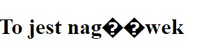
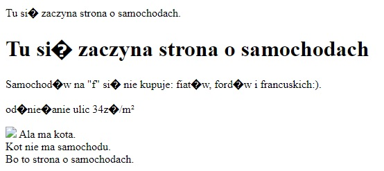
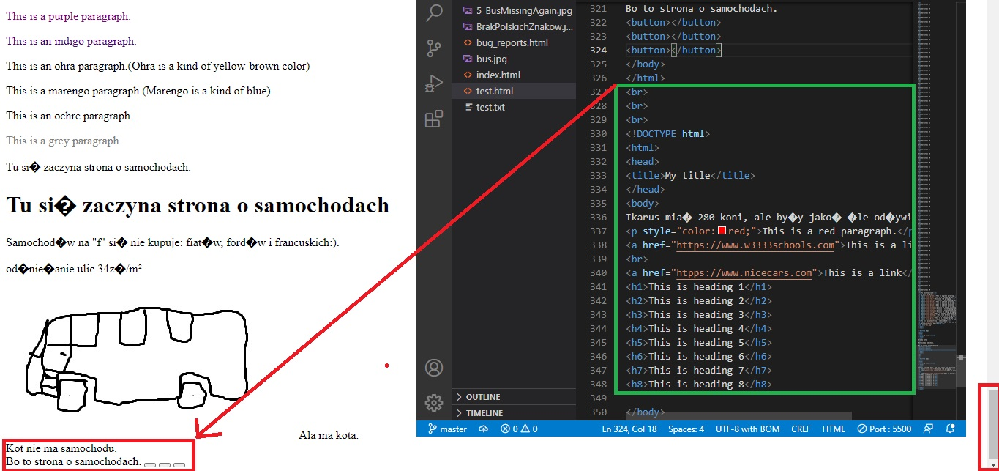
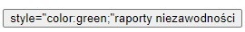

Bug number 1 :
status:closed
priority:medium
severity:medium
Failed to put an image of a bus on a website.
Comment: report of a bug is closed because image is displayed correctly.
Bug number 2 :
status:open
priority:high
severity: medium
Polish letters displayed uncorrectly.

Bug number 3 :
status:open
priority:high
severity: high
Two links are missing.
Comment: depending on environment the bug occures or not.
It exists while opening via server, but does not exist
while opening via browser.
Bug number 4 :
status: closed
priority: high
severity: high
Three buttons are missing.
Comment: Three buttons are displayed.
Bug number 5:
status: closed
priority: high
severity: high
The bus picture is missing again.

Comment: The picture of a bus is displayed correctly again.
Bug number 6 :
status: open
priority: high
severity: high
Lower part of a website is missing.

Bug number 7:
status: closed
priority: medium
severity: medium
Put a code inside a button instead of change of color.

Comment: button displayed correctly.